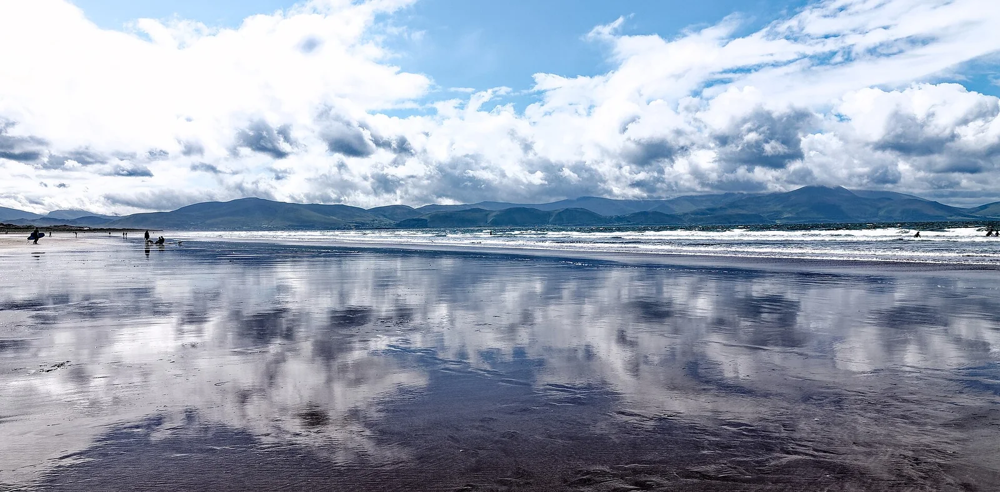

Inch Strand
Péninsule de Dingle, Kerry, Irlande · surf, baignade

Longue flèche de sable qui s’avance dans la baie de Dingle, avec des vagues régulières et douces, idéales pour apprendre. Les dunes offrent une vue sur les montagnes du Kerry.
- Lieu
- Péninsule de Dingle, Kerry, Irlande
- Niveau
- Débutant
- Activités
- surf, baignade
- Type d'eau
- Mer / océan
- Coordonnées
- 52.14, -9.98 (position approximative du secteur)
Dangers à connaître
- Courants vers la pointe de la flèche et à marée descendante.
- Eau fraîche toute l’année : combinaison conseillée.
Le conseil d'Ocean Buddy
Les vagues sont les plus faciles près de l’accès principal ; baigne-toi dans la zone surveillée en saison.
Ouvrir dans Ocean Buddy Télécharger sur l'App Store
Source : Fiche Ocean Buddy · septembre 2026 · à vérifier localement.